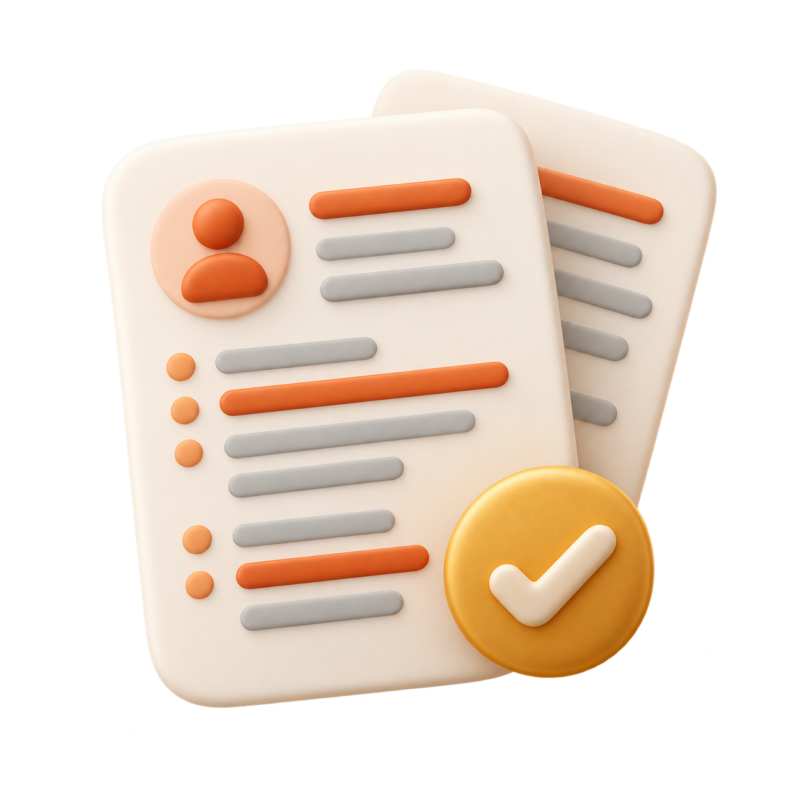
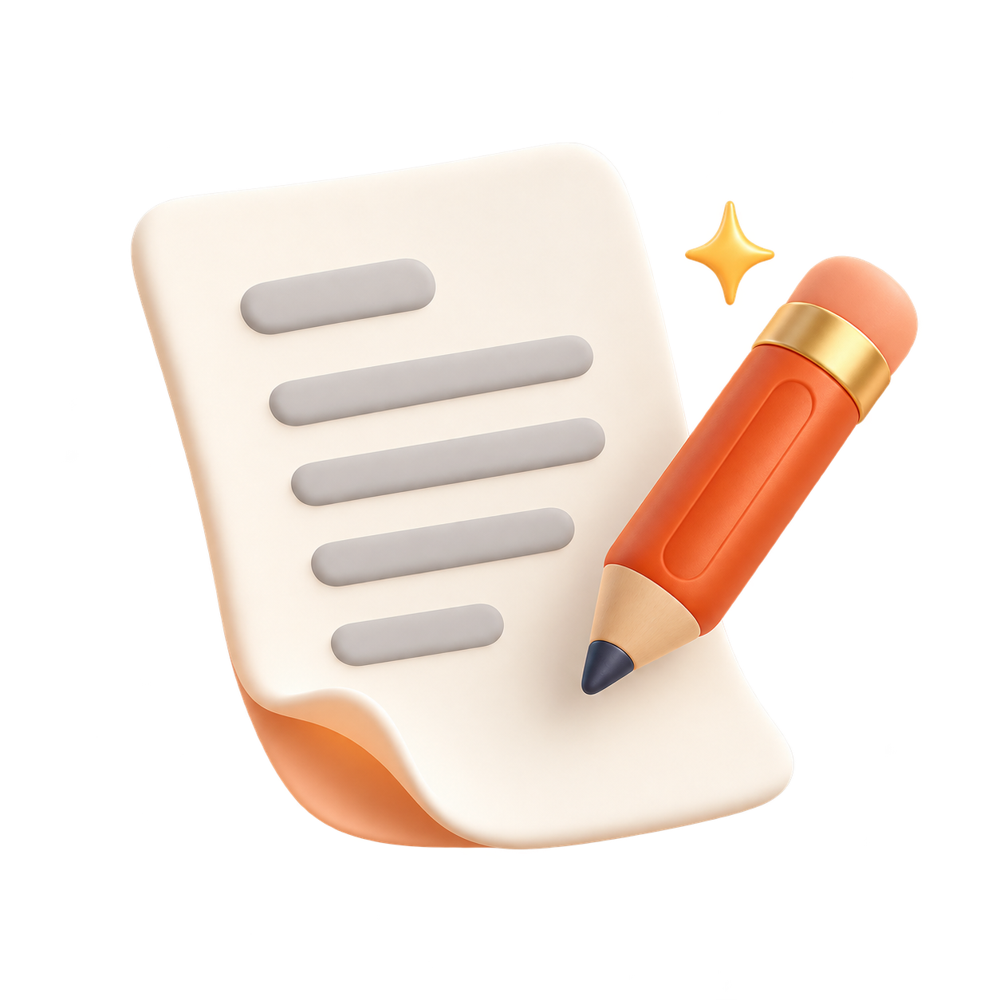

Save a job
Capture a posting with the extension, or paste the job description.
Create a resume and cover letter for each role, then track your applications in one place.
Start with your master resume. No credit card required.
Add your master resume once. Use it to tailor your documents whenever you find a role.
Capture a posting with the extension, or paste the job description.
Generate a resume and cover letter for the role. Review and export them.
Update application statuses and keep follow-ups within reach.
Prepare each application, keep it organized, and see what needs your attention next.

Create a resume and cover letter for each role using your master resume and the job description.

Use the browser extension to save the job title, company, and description directly to your workspace.
Keep your jobs and documents together, update application statuses, and see which roles need a follow-up.

Request changes to your resume or cover letter, such as a clearer summary or stronger emphasis on relevant experience. Review the result before exporting.
Your master resume and a job description. Your master resume holds your experience; JobFoocus uses it to tailor your documents for each role.
Yes. Review your resume and cover letter in the document editor and request changes with AI before exporting.
No. You can also add a job by pasting its description. The extension helps you capture job details while browsing.
You review and export your documents, then submit your application yourself. JobFoocus helps you prepare the documents and track your progress.
Bring your resume. Find a role. Create documents that fit.